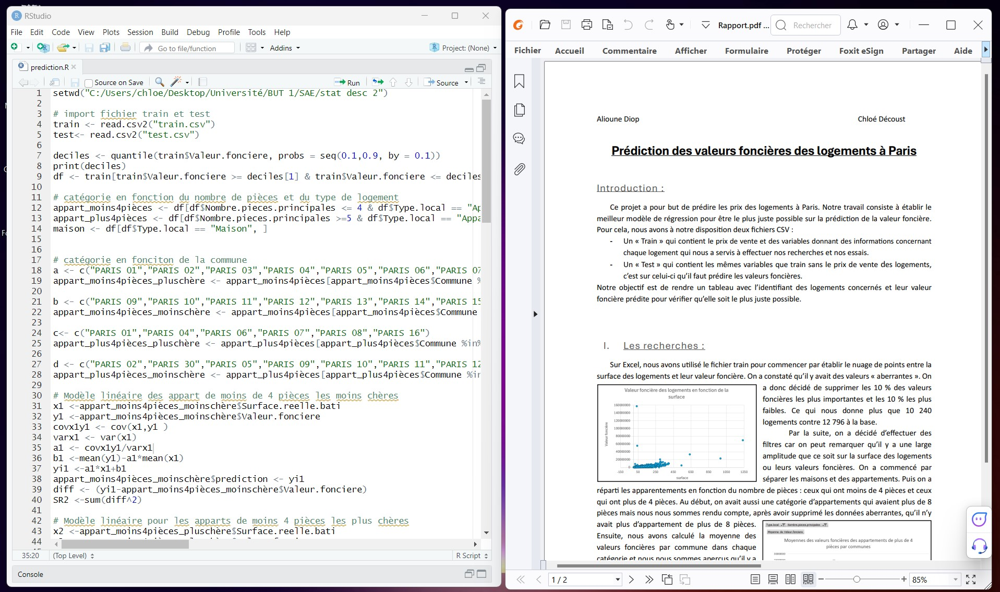

Déterminer le meilleur modèle de prédiction pour prédire le prix de vente des logements à Paris.
Pour prédire la valeur foncière des biens immobiliers à Paris, nous disposions de 2 fichier :
- un fichier où il y avait les valeurs à predire : "test"
- un fichier d'entraînement, pour tester nos modèles : "train"
Sur Excel, nous avons débuté ce projet par déterminer des catégories pour avoir un modèle par catégorie et tenter d'être le plus
précis possible.
Après avoir supprimé 10 % des biens les plus chers et les moins chers du fichier "train", nous avons d'abord séparé les maisons et
les appartements, puis les appartements selon le nombre de pièces. Ensuite, nous avons subdivisé chaque catégorie en regroupant les
logements par arrondissement et en calculant une moyenne des prix de vente. Nous avons ensuite testé les quatre modèles sur chaque
catégorie pour déterminer le meilleur dans chaque cas. Notre conclusion a été que le modèle linéaire était le meilleur pour chaque
catégorie.
Pour appliquer nos modèles sur R et sur le fichier "test", nous avons reproduit la même répartition des logements et appliqué nos
modèles pour prédire les valeurs foncières. Ensuite, nous avons rédigé un rapport détaillé expliquant notre démarche.
- La méthodologie utilisée pour élaborer le modèle et la profondeur des recherches menées
- La complexité du modèle retenu
- La qualité et la clarté de votre texte explicatif
- La clarté et l'efficacité de votre code R permettant de créer le modèle que vous avez finalement retenu
- La précision de vos prédictions se fera au moyen de la métrique "somme des carrés des résidus". Un classement des meilleurs prédictions sera effectué
- l'application des quatre modèles de régression simple
- l'application des modèles sur Excel et sur R
- Expliquer sa démarche
Ce projet m'a offert l'occasion de renforcer mes compétences en utilisant R. De plus, j'ai pu mettre en pratique l'application d'un modèle linéaire sur un cas concret. Il m'a également permis de perfectionner mes capacités rédactionnelles et d'exprimer clairement ma démarche et mes réflexions. En outre, ce projet était une sorte de mini-compétition au sein de la promotion où le but était d'obtenir la plus faible somme des carrés des résidus (SR²) pour gagner, et c'est mon binôme qui a réussi à obtenir le score le plus bas.
Voir le rapport Voir le code R